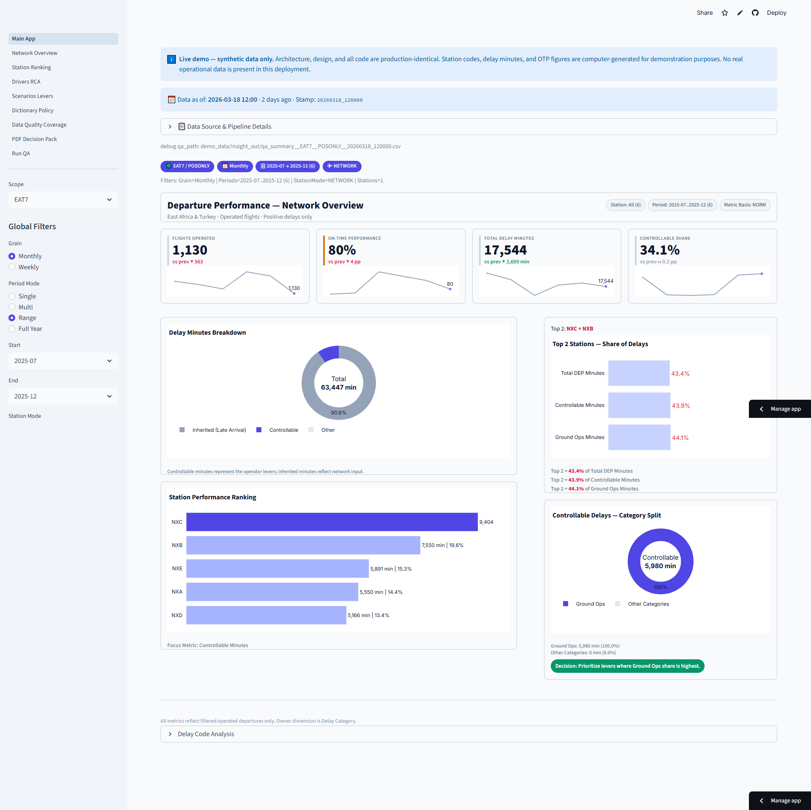
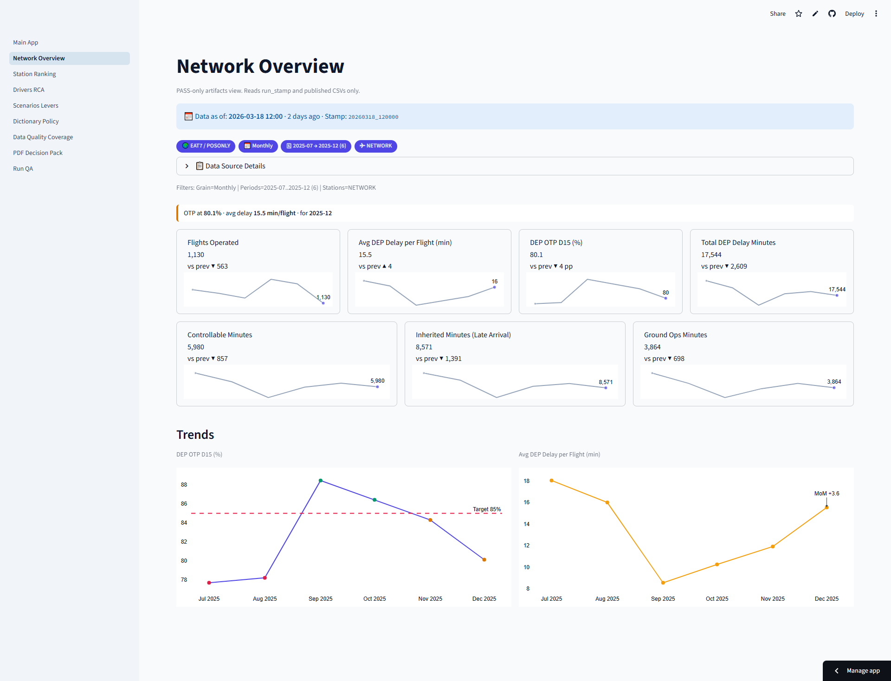
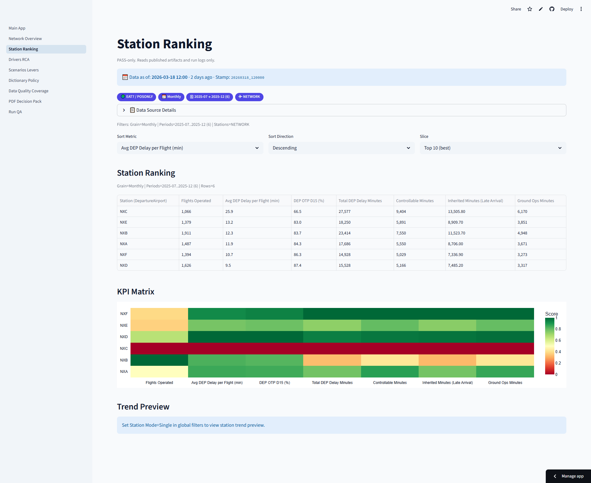
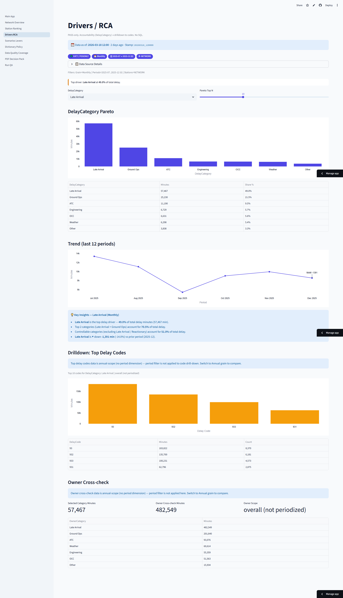
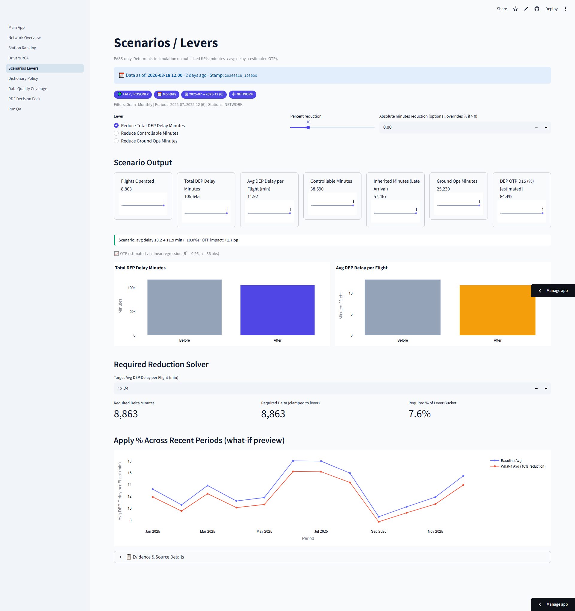

I design and build decision-grade analytics systems for airline operations. SQL pipelines, interactive dashboards, CI-validated data contracts, automated executive reporting. One person, full stack, production-ready.
Production systems, validated analysis, and research — all built from real operational problems.
Production analytics platform for departure performance intelligence
An 8-page interactive dashboard that turns raw flight and delay data into decision-grade intelligence for airline operations management. Built to answer one question in 3 seconds: are we on time, and if not, why?
The system runs a two-layer architecture. Layer 1 is a SQL Server ETL pipeline that ingests raw flight exports, cleans data through hygiene views (excluding future dates, Excel artifacts, blank keys), and publishes validated CSV artifacts. Layer 2 is a Streamlit application that consumes those artifacts read-only, with all file paths resolved from a JSON run stamp that serves as the single source of truth.
Every metric is IATA-aligned. OTP D15 against an 85% target. Average departure delay per flight. Delay minutes normalized to departure impact and attributed to delay categories. A Pareto analysis identifies which 2-3 categories own 70%+ of total delay. A what-if scenario simulator lets managers ask "if we reduce controllable delays by 10%, what happens?" and get a regression-backed estimate with R-squared confidence and extrapolation guardrails.
Built in production for a regional airline. This public demo uses anonymised data — station codes and figures are synthetic. Architecture, code, and all analytical logic are production-identical.
Dashboard screenshots
Homepage — KPI cards, delay breakdown, station ranking

Network Overview — KPI trends and OTP time series

Station Ranking — sortable heatmap and station comparison

Drivers / RCA — delay category Pareto, trend, computed insights

Scenarios / Levers — what-if simulator with OTP regression model

SQL Server analytical database with ETL pipeline and object governance
The data backbone behind everything else I build. FlightOpsDB is a SQL Server database designed for airline flight operations analysis, covering 2+ years of operational data across multiple regions and stations.
58 views · 212 delay codes · 5 DQ gate types
7-station root cause analysis for regional operations leadership
A comprehensive departure performance diagnostic covering 7 stations across East Africa and Turkey, produced for the Head of Ground Operations. The goal: identify worst-performing stations, diagnose root causes with evidence chains, and propose actionable improvements for the following year.
Methodology shown · operational data redacted
10 validated cause-and-effect relationships with SQL evidence
A catalog of proven operational insights — TAT amplification mechanism (1.02x good band, 1.77x critical band), connection hold confounding analysis, controllable misattribution mapping. Each insight includes SQL evidence, validated results, and a reproducibility matrix.
Schedule padding analysis and turnaround exception detection
Two related analysis streams that feed into departure performance understanding. Block time analysis examines the gap between scheduled and actual gate-to-gate time, revealing where schedule padding masks operational problems. TAT analysis classifies turnarounds into performance bands and detects exceptions where TAT variance predicts a late departure.
20+ vendor landscape for aviation and healthcare ops intelligence
A strategic research project mapping the competitive landscape of operational decision intelligence systems across two sectors: aviation and healthcare.
Framework shown · proprietary analysis redacted
I'm an Airport Duty Manager based in Casablanca. My day job is managing departure operations at an international airport: coordinating ground handling, managing delays, briefing crews, running the show when things go wrong at 5 AM. My documentation discipline runs to audit grade — every enhancement tracked, every validation result logged, every executive number traceable to its source query.
My other life is data engineering. Over the past year, I've designed and built a complete flight operations analytics platform from scratch: SQL Server database, Python ETL pipeline, 8-page interactive dashboard, automated PDF executive reports, and a CI/CD pipeline that validates every data file before it reaches production. All of it solo, on my own time.
The combination matters. Most data engineers don't know what IATA delay code 93L means at 6 AM when the turnaround is running long. Most ops managers don't know how to write a weighted linear regression or design a data contract. I do both.
I speak English, French, and Arabic. I work with IATA standards (AHM 730, delay codes, OTP D15), SQL Server, Python, Streamlit, Plotly, Power BI, and Git. I've studied the competitive landscape of aviation and healthcare ops intelligence vendors, mapped 20+ companies and their pricing signals, and designed consulting offer packages based on real procurement data.
I'm open to consulting engagements, analytics engineering roles, and collaboration on aviation data projects.
Casablanca, Morocco · English, French, Arabic